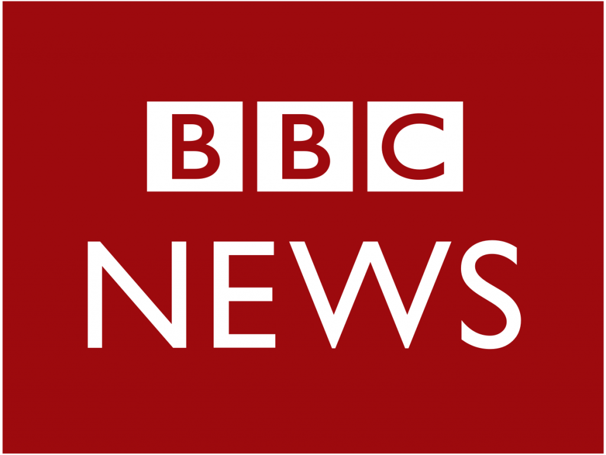

In terms of functionality, you will create an electronic program that functions just like a messaging app,
such as Whatsapp. While you may personalize it to your liking, you should include text-based
communication technology and data administration foundations.
Clone of the BBC News Website

The project story revolves around creating a website that performs in the same way as the original BBC
News website. It would be best to take screenshots of the website’s interface, parts and features, and
interactive components. There’s even an opportunity for you to express your individuality via the use of
color.